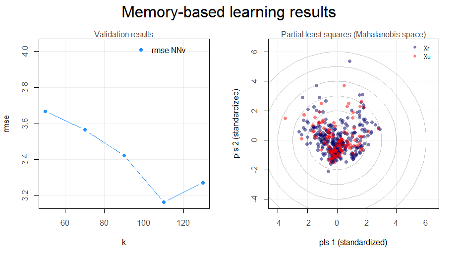
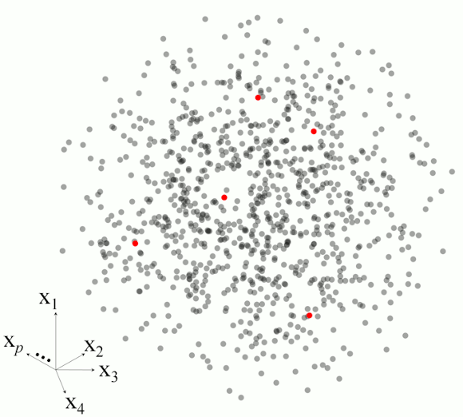

Last update: 2026-04-16
Version: 3.0.0 – vortex
Think Globally, Fit Locally (Saul and Roweis, 2003)
About
The resemble package provides computationally efficient methods for dissimilarity analysis and predictive modelling with complex spectral data. Its core functionality includes memory-based learning (MBL), evolutionary subset search and selection, and retrieval-based modelling using pre-computed model libraries. The package is designed to support local modelling, spectral library optimization, and model-based prediction in large and heterogeneous spectral data sets.
Documentation
The package includes comprehensive vignettes covering all major functionality:
- Essential concepts and setup: Introduction, data preparation, and notation
-
Dimensionality reduction: PCA and PLS projections with
ortho_projection() - Estimating dissimilarity between spectra: Dissimilarity methods and evaluation
-
Nearest neighbor search: Finding similar spectra with
search_neighbors() -
Simple global models: Global calibration with
model() -
Classical memory-based learning: Per-query local modelling with
mbl() -
Evolutionary subset search: Domain-adaptive calibration with
gesearch() -
Building a library of models: Pre-computed experts with
liblex()
What’s new in version 3.0
Version 3.0 is a major release with a redesigned API, new modelling functions, and improved computational efficiency.
New modelling functions:
liblex(): Builds a library of reusable localized models (experts) that can be stored and reused for prediction without refitting. Based on Ramirez-Lopez et al. (2026b).gesearch(): Evolutionary algorithm for selecting optimal subsets from large spectral libraries to build context-specific calibrations. Based on Ramirez-Lopez et al. (2026a).model(): Fits global PLS or GPR calibration models with cross-validation.
Redesigned dissimilarity interface:
The dissimilarity system now uses constructor functions:
-
diss_pca(),diss_pls(): Mahalanobis distance in projection space -
diss_correlation(): Correlation-based dissimilarity (including moving window) -
diss_euclidean(),diss_mahalanobis(),diss_cosine(): Distance metrics
Component selection via ncomp_by_var(), ncomp_by_cumvar(), ncomp_by_opc(), or ncomp_fixed().
Redesigned neighbor and fitting interfaces:
-
neighbors_k(),neighbors_diss(): Neighbor selection constructors -
fit_pls(),fit_wapls(),fit_gpr(): Local fitting constructors (replacelocal_fit_*()functions)
Breaking changes in mbl():
-
k,k_diss,k_rangereplaced byneighborsargument -
methodrenamed tofit_method -
centerandscaleremoved; now controlled within constructors
See NEWS.md for full details on deprecated and removed functions.
Core functionality
Dimensionality reduction:
-
ortho_projection(): PCA or PLS projection with multiple algorithms (SVD, NIPALS, SIMPLS)
Computing dissimilarity matrices:
-
dissimilarity(): Main interface for dissimilarity computation -
diss_pca(),diss_pls(),diss_correlation(),diss_euclidean(),diss_mahalanobis(),diss_cosine(): Method constructors -
diss_evaluate(): Evaluate dissimilarity matrices using side information
Neighbor search:
-
search_neighbors(): Efficient k-nearest neighbor retrieval
Modelling spectral data:
-
model(): Global PLS or GPR calibration -
mbl(): Memory-based learning for per-query local modelling -
gesearch(): Evolutionary subset selection for domain-adaptive calibration -
liblex(): Pre-computed library of local experts for fast prediction
Installation
Install from CRAN:
install.packages("resemble")Or install the development version from GitHub:
# install.packages("devtools")
devtools::install_github("l-ramirez-lopez/resemble")The package requires a C++ compiler. On Windows, install Rtools. On macOS, you may need to install gfortran and clang from CRAN tools.
Example: Memory-based learning with mbl()
library(resemble)
library(prospectr)
data(NIRsoil)
# Preprocess spectra
NIRsoil$spc_pr <- savitzkyGolay(
detrend(NIRsoil$spc, wav = as.numeric(colnames(NIRsoil$spc))),
m = 1, p = 1, w = 7
)
# Split into training and test sets
train_x <- NIRsoil$spc_pr[NIRsoil$train == 1 & !is.na(NIRsoil$CEC), ]
train_y <- NIRsoil$CEC[NIRsoil$train == 1 & !is.na(NIRsoil$CEC)]
test_x <- NIRsoil$spc_pr[NIRsoil$train == 0 & !is.na(NIRsoil$CEC), ]
test_y <- NIRsoil$CEC[NIRsoil$train == 0 & !is.na(NIRsoil$CEC)]
# Memory-based learning with Gaussian process regression
sbl <- mbl(
Xr = train_x,
Yr = train_y,
Xu = test_x,
neighbors = neighbors_k(seq(50, 130, by = 20)),
diss_method = diss_pca(ncomp = ncomp_by_opc(40)),
fit_method = fit_gpr(),
control = mbl_control(validation_type = "NNv")
)
sbl
plot(sbl)
get_predictions(sbl)

Example: Pre-computed model library with liblex()
liblex() builds a library of local experts that can be reused for prediction without refitting:
# Build model library
model_lib <- liblex(
Xr = train_x,
Yr = train_y,
neighbors = neighbors_k(c(40, 60, 80)),
diss_method = diss_correlation(ws = 27, scale = TRUE),
fit_method = fit_wapls(min_ncomp = 3, max_ncomp = 15, method = "mpls"),
control = liblex_control(tune = TRUE)
)
# Predict new observations
predictions <- predict(model_lib, test_x)Example: Evolutionary subset selection with gesearch()
gesearch() selects optimal subsets from large spectral libraries:
# Search for optimal calibration subset
gs <- gesearch(
Xr = train_x,
Yr = train_y,
Xu = test_x,
k = 50,
b = 100,
retain = 0.97,
target_size = 200,
fit_method = fit_pls(ncomp = 15, method = "mpls"),
optimization = c("reconstruction", "similarity"),
seed = 42
)
# Predict using selected subset
preds <- predict(gs, test_x)
plot(gs)Memory-based learning overview
Memory-based learning (MBL, a.k.a. instance-based learning or local modelling) is a non-linear lazy learning approach. For each prediction, the algorithm:
- Finds the k-nearest neighbors in the reference set
- Fits a local model using those neighbors
- Predicts the response for the target observation
The mbl() function offers three regression methods for local models:
-
fit_gpr(): Gaussian process regression with linear kernel -
fit_pls(): Partial least squares -
fit_wapls(): Weighted average PLS (Shenk et al., 1997)

Citing the package
citation(package = "resemble")News: Memory-based learning and resemble
2026.05: van Leeuwen et al., 2026
usedresemblefor principal component Mahalanobis nearest-neighbour search to extract spectrally similar samples from the KSSL library for MIR model calibration in Dutch soils.2026.04: Irving et al., 2026
usedresemblein modelling workflows for infrared spectroscopy prediction of soil microbial properties across Australian soils.2026.03: Shrestha et al., 2026
usedresemblein a hybrid localisation workflow to predict farm-scale soil cadmium from a regional spectral library; LOCAL models with MIR data performed best.2025.10: Summerauer et al., 2025 used
resemblefor MBL modelling of soil properties from infrared spectra across tropical hillslopes in Eastern Africa.2025.05: Sun and Shi, 2025 combined spectral and geographical similarity for SOC prediction; local PLSR outperformed global models.
2025.03: Breure et al., 2025
usedresemblefor local VNIR modelling of soil carbon fractions (POC and MAOC) across European agricultural soils, published in Nature Communications.2025.03: Purushothaman et al., 2025 applied MBL to AVIRIS-NG hyperspectral data for soil property prediction in India.
2025.01: Dai et al., 2025 used MBL for POC and MAOC prediction from VNIR in Guangdong.
2024.12: Asrat et al., 2024 MBL for local calibration sample selection in the Moroccan Soil Spectral Library.
2024.09: Barbetti et al., 2024 MBL to detect SOC changes in long-term experiments using vis–NIR.
2023.11: Wang et al., 2023 N-MBL (MBL + RF within local fitting) for regional vis–NIR models.
2022: Sanderman et al., 2022 evaluated transferability of large MIR spectral databases across instruments.
2022.01: Ng et al., 2022 showed that MBL yields better local SOC predictions than spiking approaches.
2021.10: Ramirez-Lopez et al., 2021 MBL to predict soil properties in Africa.
2020.08: Charlotte Rivard’s MIR MBL tutorial: https://whrc.github.io/Soil-Predictions-MIR/
2020.01: Sanderman et al., 2020 MIR spectroscopy for prediction of soil health indicators; MBL and Cubist excelled.
2019.03: Ramirez-Lopez et al., 2019 MBL in digital soil mapping at farm scale.
2019.03: Jaconi et al., 2019 MBL for national-scale NIR texture predictions in Germany.
2018.01: Dotto et al., 2018 MBL for SOC prediction in Brazil.
2016.04: Viscarra Rossel et al., 2016 memory-based learning for soil property prediction.
2014.03: First CRAN release of
resemble.
Related packages
-
prospectr: Signal processing and chemometrics for spectroscopy
Bug reports
Report issues at GitHub or contact the maintainer (ramirez.lopez.leo@gmail.com).
References
Lobsey, C. R., Viscarra Rossel, R. A., Roudier, P., & Hedley, C. B. 2017. rs-local data-mines information from spectral libraries to improve local calibrations. European Journal of Soil Science, 68(6), 840-852.
Ramirez-Lopez, L., Behrens, T., Schmidt, K., Stevens, A., Dematte, J.A.M., Scholten, T. 2013. The spectrum-based learner: A new local approach for modeling soil vis-NIR spectra of complex data sets. Geoderma 195-196, 268-279.
Ramirez-Lopez, L., Viscarra Rossel, R., Behrens, T., Orellano, C., Perez-Fernandez, E., Kooijman, L., Wadoux, A. M. J.-C., Breure, T., Summerauer, L., Safanelli, J. L., & Plans, M. (2026a). When spectral libraries are too complex to search: Evolutionary subset selection for domain-adaptive calibration. Analytica Chimica Acta, under review.
Ramirez-Lopez, L., Metz, M., Lesnoff, M., Orellano, C., Perez-Fernandez, E., Plans, M., Breure, T., Behrens, T., Viscarra Rossel, R., & Peng, Y. (2026b). Rethinking local spectral modelling: From per-query refitting to model libraries. Analytica Chimica Acta, under review.
Saul, L. K., & Roweis, S. T. 2003. Think globally, fit locally: unsupervised learning of low dimensional manifolds. Journal of machine learning research, 4(Jun), 119-155.
Shenk, J., Westerhaus, M., and Berzaghi, P. 1997. Investigation of a LOCAL calibration procedure for near infrared instruments. Journal of Near Infrared Spectroscopy, 5, 223-232.